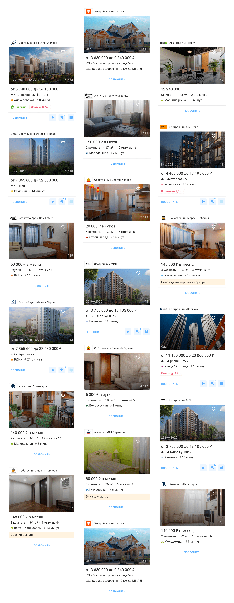

Экран жилого комплекса и выдача
Заредизайнил ключевые экраны приложения. Старый интерфейс плохо масштабировался и стал маловат функционалу. Кастомные элементы нагружали рендер —замедлялась производительность. Людям было тяжело считывать информацию из-за сумбурной вёрстки.
В новом дизайне всё это исправил, посмотрите.
Иерархия заголовков и правильные акценты упростили считывание информации. Это увеличило время пробывания на экране и проникновение некоторого функционала.
Ещё экран стал загружаться в 7 раз быстрее.
Выдача задизайнена так, что легко подстраивается под любой тип недвижимости и сделки.

Выдача задизайнена так, что легко подстраивается под любой тип недвижимости и сделки.
Дизайнер
Алан Каджаев
Менеджер продукта
Алина Козина
Ведущий разработчик
Дима Огнёв
Разработчик
Роберт Бадамшин